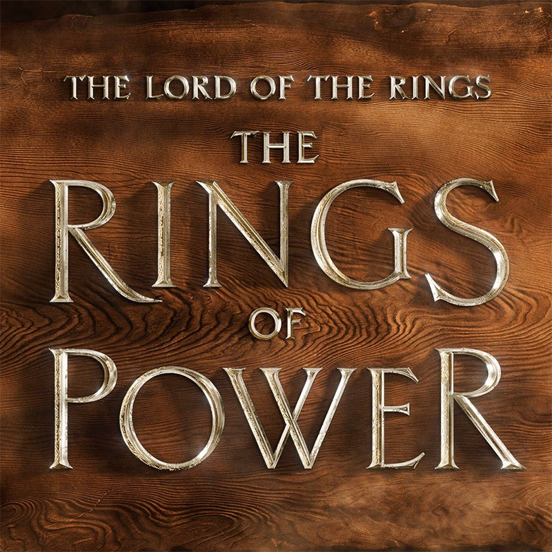
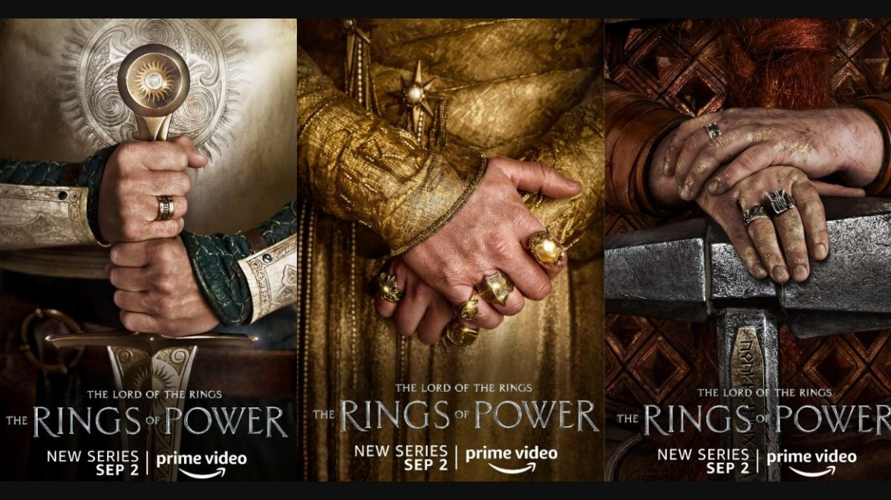

Натхненні подіями, описаними Дж. Р. Р. Толкіном в історії Середзем’я після «Гобіта» і «Володаря перснів», «Персні влади» покажуть те, що сталося задовго до подій цих романів, що отримали назву «Друга епоха Середзем’я».
Події, що відбуваються за тисячі років до подій книг і фільмів, докладно описують кілька подій під час вищезгаданої Другої епохи, у тому числі створення Сауроном титульних магічних Перснів Влади та сумнозвісний Перстень Всевладдя, що призначений для домінування над усіма іншими за його волею.
Про що серіал «Персні влади»?
Дія відбувається під час Другої Епохи Середзем’я — для довідки, «Гобіт» та «Володар перснів» — наприкінці Третьої Епохи. Темний Лорд маніпулює істотами Середзем’я, та виношує плани посіяти хаос і підкорити землі своїй волі.
Сама Друга Епоха – це період, охоплюючий тисячі років, що залишає достатньо місця для історій, які можна розповісти у «Перснях влади». Крім повернення Саурона, ослабленого після війни з ельфами за наказом першого Темного Володаря, Моргота, і кування Персня Влади, Друга Епоха знаменується падінням острівного королівства Нуменор, нащадки якого заснували людські королівства Гондор і Арнор, і навіть перетворенням усього світу з плоскої Землі на сферичну планету.
Однак ми знаємо, що в серіалі ми побачимо події не лише цього проміжку часу. Наш перший погляд на серіал припускав погляд на ранні роки створення величезної Арди, світу фентезійних творів Толкіна.
Ми не впевнені в тому, як і чи будуть пов’язані «Персні влади» з культовою екранізацією «Володаря перснів» Пітера Джексона. Кульмінацією Другої Епохи стає битва Останньої спілки ельфів і людей із Сауроном біля підніжжя гори Долі, подія, показана на початку «Братства персня», тому ми можемо побачити тут зв’язок. Крім того, все, що ми знаємо, це те, що Amazon дозволено використовувати туманну ідею «матеріалів» з фільмів, але що це означає, поки що неясно. Чекайте на щось, що нагадує про фільми, але не пов’язане з ними безпосередньо візуально.
А що в майбутньому?
Ми мало що знаємо про плани Amazon на майбутнє «Володаря перснів», окрім як мінімум другого сезону «Перснів влади». Але ми точно знаємо, що на екрани виходить як мінімум ще один проєкт з «Володаря перснів»: минулого року Warner Bros. Animation і New Line Cinema оголосили, що Кендзі Каміяма («Ультрамен», «Привид у броні») стане режисером фільму «Володар перснів: Війна рохіррімов» – аніме-фільм, що розповідає історію Хельма Молотобійця, легендарного короля Рохана, за правління якого була побудована Гельмова западина, фортеця, обложена урук-хаями Сарумана в «Двох вежах».
